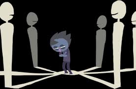

O bullying é um comportamento agressivo e intencional, repetido ao longo do tempo, que envolve a imposição de sofrimento físico ou psicológico a uma pessoa. Esse comportamento pode se manifestar de diversas formas, como agressões verbais, exclusão social, difamação, ameaças, ataques físicos, ou até mesmo por meio de bullying virtual (cyberbullying), através da internet e redes sociais. O bullying geralmente acontece em ambientes como escolas, locais de trabalho ou outros espaços sociais, e tem como alvo indivíduos considerados diferentes, vulneráveis ou que não se encaixam em certos padrões de grupo. O impacto do bullying pode ser devastador para a vítima, gerando danos emocionais, psicológicos e sociais.
Consiste em desqualificar a vítima com o objetivo de diminuir sua autoestima, fazendo com que ela se sinta inferior. Isso pode envolver críticas constantes sobre a aparência, habilidades ou caráter da pessoa.
Esse tipo de bullying acontece no ambiente online, como redes sociais, e-mails ou aplicativos de mensagens. Inclui ataques, ameaças e perseguições virtuais, expondo a vítima ao ridículo ou aos abusos digitais.
Caracteriza-se por ações que ocorrem de forma disfarçada ou indireta, como espalhar rumores, fazer fofocas ou manipular outros para atacar a vítima. A agressão não é feita diretamente, mas ainda assim causa dano psicológico.
Refere-se ao abuso ou discriminação sistemática por parte de instituições, como escolas ou empresas, que ignoram ou até incentivam comportamentos abusivos entre seus membros, prejudicando a vítima por meio da negligência ou da falta de medidas preventivas.
É o bullying baseado em preconceitos de raça ou etnia. Envolve ofensas, discriminação e humilhação devido à origem racial ou características físicas da vítima, como cor da pele, cabelo ou traços faciais.
O bullying tem efeitos significativos e duradouros não só sobre as vítimas, mas também sobre a sociedade como um todo. Emocionalmente, ele contribui para um aumento da insegurança, ansiedade e depressão entre as vítimas, afetando sua autoestima e sensação de pertencimento. Além disso, pode resultar em um aumento da violência social, com indivíduos sendo mais propensos a desenvolver comportamentos agressivos ou autodestrutivos. No contexto educacional e profissional, o bullying prejudica o aprendizado e o desempenho, levando a taxas mais altas de evasão escolar e afastamento do trabalho. Isso resulta em perdas econômicas e no comprometimento da formação de uma força de trabalho qualificada. O bullying também contribui para a perpetuação de normas discriminatórias e de exclusão, criando um ambiente social mais fragmentado e intolerante. Além disso, o impacto psicológico das vítimas pode afetar a convivência em sociedade, resultando em uma falta de empatia e solidariedade. Portanto, combater o bullying é essencial não apenas para proteger as vítimas, mas também para promover uma sociedade mais justa, inclusiva e saudável.
Estimular a aceitação das diferenças: Promover atividades que celebrem a diversidade cultural, de gênero, racial e de habilidades ajuda a criar uma mentalidade de inclusão, tornando o bullying menos aceitável. Ensinar desde cedo que cada pessoa é única e merece respeito pode reduzir atitudes preconceituosas.
Programas de sensibilização: Implementar programas contínuos de sensibilização sobre o impacto do bullying, abordando não apenas as vítimas, mas também os agressores e os observadores, para que todos compreendam o dano causado. Workshops interativos, palestras e vídeos educativos podem ser eficazes para engajar os alunos e funcionários.
Capacitação contínua de educadores: Além de treinamentos iniciais, proporcionar cursos regulares que capacitem professores e líderes a desenvolverem habilidades de mediação de conflitos, abordando questões de bullying com empatia e estratégias de resolução pacífica.
Ambientes colaborativos: Promover a cooperação entre estudantes, colegas de trabalho e membros da comunidade, criando espaços que incentivem o apoio mútuo. Ao fortalecer laços de amizade e solidariedade, reduz-se o isolamento social, o que dificulta a ocorrência de bullying.
Regras claras e consequências definidas: Estabelecer regras claras sobre o comportamento esperado em escolas e locais de trabalho, com políticas de "tolerância zero" ao bullying, assegurando que as consequências sejam aplicadas de forma justa e consistente. A presença de um código de conduta forte pode ajudar a dissuadir atitudes agressivas.
Suporte psicológico acessível: Criar canais de apoio psicológico acessíveis tanto para as vítimas quanto para os agressores, promovendo o entendimento de que a intervenção precoce pode evitar que o bullying se agrave. Ambientes de apoio oferecem ajuda tanto para lidar com os efeitos emocionais quanto para mudar comportamentos agressivos.
Fortalecer a parceria escola-família: Pais e educadores devem trabalhar juntos, compartilhando informações sobre o comportamento dos jovens e oferecendo apoio conjunto. Isso inclui reuniões regulares para discutir o bem-estar emocional dos alunos e estratégias de prevenção de bullying.
Atenção aos sinais e apoio emocional: Os responsáveis devem estar atentos a mudanças comportamentais que possam indicar que o jovem está enfrentando bullying, seja como vítima ou agressor. Oferecer um espaço seguro em casa para conversas abertas sobre sentimentos e desafios sociais pode ajudar na identificação precoce de problemas.
Promoção de valores familiares e sociais: Pais e familiares devem ensinar e reforçar valores como respeito, justiça e empatia, servindo de exemplo para os jovens. Atitudes de respeito e resolução pacífica de conflitos dentro de casa refletem no comportamento dos jovens, criando um ciclo de respeito em toda a sociedade.